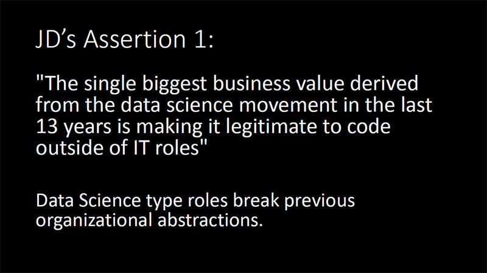

Videos from posit::conf(2023) are now available on YouTube, including our talk about how we built Real World Data Science using Quarto. We’ve embedded a selection of videos in this blog post, but be sure to check out the full playlist.
Tuesday, September 19
From data confusion to data intelligence
An inspiring start to posit::conf(2023) this morning, with keynote talks from Elaine McVey, senior director of analytics at Chief, and David Meza, head of analytics for human capital at NASA, sharing stories and insights on how to build strong data science foundations in organisations.
McVey spoke about the frequent mismatch between high levels of hope for what data science can achieve within organisations, and low levels of understanding about how to set up data science teams for success. The best chance for success, she said, is if data scientists take the lead in helping organisations learn how to make best use of data science expertise.
From there, McVey went on to present a set of “guerilla data science tactics” that data scientists can use to get around any obstacles they may encounter, as illustrated in the slide below:

Data scientists should start by scanning for opportunities to help the organisation, before building a small-scale version of what it is they propose to do. Once buy-in is achieved, and data is made available, it’s time to run with the project. Once complete, you need to “nail the landing,” McVey said, and make sure to communicate results broadly – not just to primary stakeholders, but across the organisation. Then comes time to “up the ante”: if your first project has built some organisational goodwill, leverage that and look for something higher risk, with higher potential reward for the organisation.
Throughout this process, McVey said, data scientists should be building foundations for future projects – creating data pipelines, R packages, etc., that can be reused later. This was a point picked up and developed upon by Meza, who walked through in detail the steps required to establish “data foundations” within organisations, drawing on his own past experiences. Typically, he said, organisations seem to collect data just to store it – but always data should be collected, stored, and managed with analysis in mind.
A hacker’s guide to open source LLMs
Fast.ai’s Jeremy Howard lifted the hood on large language models (LLMs) in the second of two keynotes this morning.
Beginning with an accessible overview of what LLMs are, how they work, and how they are trained, Howard then addressed some of the criticisms made of LLMs – that they “can’t reason” or give correct answers.
As Howard explained, a model like OpenAI’s GPT-4 is not trained at any point to give correct answers to prompts – only to predict the most likely next word, or word token, in a sequence.
The pre-training step, for example, does not involve only feeding the model with “correct answers,” instead relying on a corpus of text from the internet – some (or, maybe, much) of which may consist of factual inaccuracies, errors, falsehoods, etc. And in the fine-tuning stage, when human feedback is used to either reward or penalise model outputs, Howard said there is a preference for confident-sounding responses – and so, again, this doesn’t necessarily reward the model for giving correct answers.
Howard made the case that users have to help language models to give good answers, and that custom instructions can be used to change the way models respond. He then walked delegates through a series of demos using open-source LLMs, to show how outputs can be refined and improved.
“My view is that if you are going to be good at language modelling in any way,” said Howard, “you have to be good at using language models.”
Documenting Things: Openly for Future Us
Julia Stewart Lowndes, founding director of Openscapes, gave a compelling talk advocating for the importance of documentation for data science projects.
Documenting things, Lowndes said, should be done for the benefit of “Future Us”: not only ourselves but our teams and our communities who may be contributing to or revisiting the project in the next hours, days, weeks, months and years.
Documenting things does not have to be painful, Lowndes said. In fact, it’s supposed to be helpful. It does, however, take time and intention. And it means slowing down briefly to write things down now, in order that work speeds up in the longer term.
Lowndes then shared some pointers to help people get started with documentation:
- Have a place to write things down – Google Docs, GitHub, wherever – ideally a place where people can work collaboratively.
- Develop the habit of writing things down as you go.
- Write in a modular way – small bits of text are less daunting and easier to maintain collaboratively.
- Have an audience in mind – you are writing this for someone, so make it engaging for them.
- write in an inclusive tone.
- Narrate code in small chunks, and in a way that you’d say out loud if teaching.
- Share, and share early – you want to be able to iterate on your documentation and receive feedback. Also, sharing openly does not always mean publicly – manage permissions as necessary.
- Design for readability and accessibility.
- Use section headers – particularly important for screen readers, but this also helps generally to describe the flow of a document. Plus, you can link readers directly to specific parts of a document.
- Use text formatting.
- Use alt-text for images, describing the take-home message of the image.
Teaching Data Science in Adverse Circumstances: Posit Cloud and Quarto to the Rescue
Professor Aleksander Dietrichson of the Universidad de San Martin brought a valuable perspective to posit::conf(2023) on the challenges of teaching data science in the face of technology and language barriers.
At the public, state-funded university in Argentina where Dietrichson works, more than half of students do not have access to laptops or computers at home, and those who do have access – whether at home or at school – may not have access to the latest kit. But “Posit Cloud solves the resource issue,” Dietrichson said. The free-to-use, online browser-based version of Posit’s tools runs on anything; Dietrichson said he’s tested it successfully on both decade-old computers and cellphones – though he doesn’t recommend using it on a cellphone!
On language barriers, he pointed out that learning to code in R and Python can be challenging when English isn’t your first language – if you don’t have semantic access to function names, for example, there will be a steeper learning curve for students.
Dietrichson also has to deal with the problem of “arithmaphobia” among some of the liberal arts students he teaches. This has necessitated a reshuffling of the typical statistics curriculum, he said, in order to make it easier for students to access. But the work is worth it, Dietrichson explained: many of his students want to work in careers like journalism, and he believes that “journalists should be statistically literate.”
Dynamic Interactions: Empowering Educators and Researchers with Interactive Quarto Documents Using webR
Some of my favourite sessions at posit::conf(2023) were about Quarto. Understandable, really, when you consider that we used it to build this very site! Albert Rapp has described Quarto as a web dev gateway drug, and I’d agree with him:
Quarto is a powerful tool for creating beautiful and interactive documents. I think of it as a gateway drug to web development: While it offers a user-friendly interface for creating documents and blogs, it also allows users to delve into the world of HTML & CSS without even realizing it.
I spoke a bit about my own journey into web dev in one of the Quarto sessions at posit::conf, but what I loved most about these sessions was learning about all the cool new things I’ve yet to discover and try out. For example, James Balamuta’s talk and demonstration of building interactive code cells into Quarto webpages was an eye-opener!
Since returning from Chicago I’ve tested out this functionality and added Balamuta’s example here. First run the code that’s already in the code block but also edit it to try out your own examples.
Visit the quarto-webr website for details on how to make full use of this capability. Once you’re up to speed, why not contribute a webR-enabled article for Real World Data Science?
Wednesday, September 20
R Not Only In Production
Kara Woo, senior data science engineer at InsightRX, began her Wednesday morning keynote with a rousing description of posit::conf(2023) being like a “great community garden” where things are being cultivated and shared for the benefit of all. This is an important feeling, Woo said, because it doesn’t always feel like that in our day jobs. Data scientists can feel siloed, not able to share ideas with like-minded people, and facing resistance from people who say “R can’t do that, R isn’t a real programming language” – a comment that elicited a groan of weary familiarity from sections of the crowd.
But as Woo went on to explain, “it is possible to build quality software in R” and “it is possible to have an organisation where the strengths of R and the people who use it influence the organisation as a whole.”
Woo was speaking from her experience at InsightRX, a precision medicine company, which makes software for clinicians to inform individualised dosing decisions for patients. Through a tool called Nova, clinicians feed in data about a patient’s unique characteristics, which is then passed to R for analysis, which then returns dosage recommendations to Nova.
In InsightRX, R has also been used to solve problems that are not strictly data science problems. Woo gave the example of working with a colleague to write an R package to identify data labels that have been changed and rollout translations for those labels in multiple languages for software users in different parts of the world.
“Our mindset of R being a first-class language empowers us to solve problems,” said Woo.
It’s Abstractions All the Way Down…
The second of the morning keynotes on day two of posit::conf(2023) was by JD Long, vice president of risk management at RenaissanceRe.
During Long’s insightful – and frequently very funny – talk, this slide appeared:

Do you agree with Long’s assertion? If you don’t, what is the single biggest business value that’s been derived from the data science movement? Share your thoughts in the comments below.
It’s All About Perspective: Making a Case for Generative Art
Hobbies are important, right? They are a way to relax, to unwind. But also a great opportunity to learn things that might come in handy professionally. At least, that is the experience of Meghan Santiago Harris, a data scientist in the Prostate Cancer Clinical Trials Consortium at Memorial Sloan Kettering.
Harris shared with delegates her journey into generative art, and how skills acquired using ggplot2 for “fun stuff” had a positive impact on her work.
She first defined generative art as artwork created through a program in any language or interface, so long as the program itself executes the generation of the art. To make generative art, Harris said, you just need data and the ability to “think outside the grid” of your favourite graphics software or package. Harris’s tool of choice is ggplot2, but any will do: “If a tool lets you plot data, it will let you make art,” she said.

Harris’s passion for generative art bloomed during a recent period of maternity leave. She was coding for fun but also deepening her understanding and expertise in areas like code iteration, development and communication. And, in August, Harris published an R package called artpack, which is now available on CRAN and designed “to help generative artists of all levels create generative art in R.”
Generative art was a motivation to learn and do more, Harris said, and doing something she loved helped make programming and data science more digestible.
How the R for Data Science (R4DS) Online Learning Community Made Me a Better Student
Following straight after Meghan Santiago Harris was Lydia Gibson, a data scientist from Intel, with an inspiring talk about her route into data science. Gibson began by explaining how, when younger, “I wanted to be a fashion designer.” For her high school prom, Gibson even designed her own dress, which her grandmother made for her.
In 2011, Gibson earned a BS in economics and worked in retail customer service and state and local government for a time before deciding to return to school to do a Masters in statistics in 2021. She had “no experience of programming” when she made this decision, but soon learned that R is “a necessary evil if you have to go back to school to do statistics.”
Gibson told delegates that discovering data visualisation was what made her care about R. She could “feed [her] need for creativity” while also learning about things that were required for her course.
And it was the R for Data Science (R4DS) Online Learning Community that helped take her learning to the next level. Gibson described R4DS as “an amazing, welcoming learning environment where beginners and advanced folks alike can come together to learn not only R but data science as a whole.”
“Being surrounded by folks more advanced than you is a gift, not a curse,” she said, and she urged delegates to find what they are passionate about and explore its depths.
GitHub Copilot integration with RStudio, it’s finally here!
Tom Mock, product manager for Posit Workbench and RStudio, had a full house for his talk about the upcoming integration of GitHub’s code Copilot product into RStudio. Copilot, Mock said, is an AI pair programmer that offers autocomplete-style suggestions for code – and this integration is one of the most popular requested features among RStudio users on GitHub.
To make use of the integration, you’ll need a Copilot subscription from GitHub. But more than that, Mock said, users will need to experiment to learn how to get the most out of the “generative [AI] loop.”
See Mock’s slide deck below for more details.
- Copyright and licence
- © 2023 Royal Statistical Society

 This article is licensed under a Creative Commons Attribution 4.0 (CC BY 4.0) International licence.
This article is licensed under a Creative Commons Attribution 4.0 (CC BY 4.0) International licence.
- How to cite
- Tarran, Brian. 2023. “Live from Chicago: Real World Data Science at posit::conf(2023).” Real World Data Science, September 19, 2023, updated September 27, 2023. URL